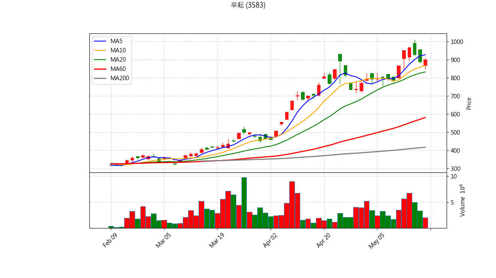
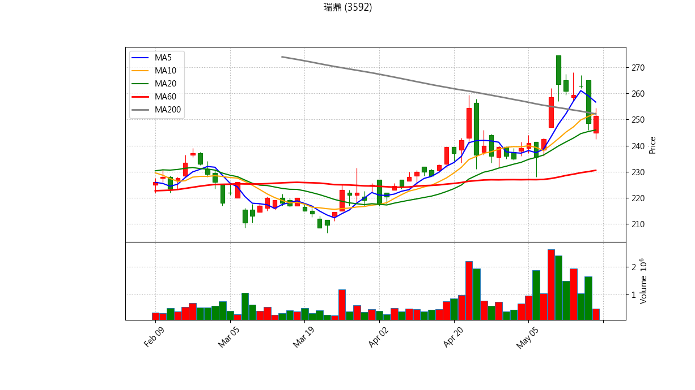
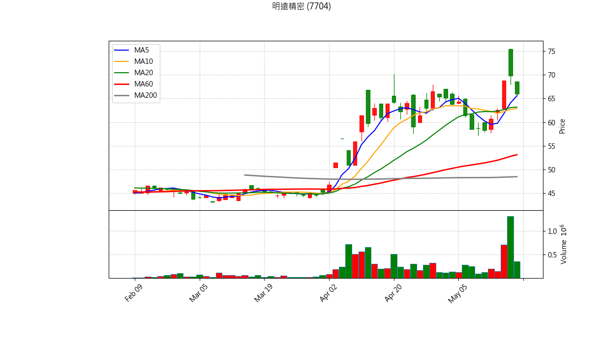

📊 股票庫存 出場與 AI 綜合診斷報告
分析時間: {datetime.now().strftime("%Y-%m-%d %H:%M:%S")}
結合量化條件與 Gemini AI 綜合技術分析
世德 (2066)
最新收盤價: 58.00 (更新時間: 2026-05-18 20:55)
💼 庫存狀態
買進均價：98.03
庫存股數：3000
預估損益：-120,090
報酬率：-40.83%
📋 量化診斷結果
✅ 目前未觸發明顯技術面出場條件，可依紀律續抱。

藍線: 5MA, 橘線: 10MA, 綠線: 20MA, 紅線: 60MA, 灰線: 200MA
Gemini 綜合診斷
美隆電 (2477)
最新收盤價: 20.75 (更新時間: 2026-05-18 20:56)
💼 庫存狀態
買進均價：27.10
庫存股數：2000
預估損益：-12,700
報酬率：-23.43%
📋 量化診斷結果
⚠️ 【跌破 5日線】短線轉弱，留意停損/停利。
🚨 【跌破 10日線】波段趨勢破壞，強烈建議波段出場。
💀 【跌破季線且季線下彎】生命線斷裂，絕對停損訊號！

藍線: 5MA, 橘線: 10MA, 綠線: 20MA, 紅線: 60MA, 灰線: 200MA
Gemini 綜合診斷
精材 (3374)
最新收盤價: 250.50 (更新時間: 2026-05-18 20:57)
💼 庫存狀態
買進均價：209.88
庫存股數：20
預估損益：812
報酬率：19.35%
📋 量化診斷結果
⚠️ 【跌破 5日線】短線轉弱，留意停損/停利。

藍線: 5MA, 橘線: 10MA, 綠線: 20MA, 紅線: 60MA, 灰線: 200MA
Gemini 綜合診斷
安勤 (3479)
最新收盤價: 102.50 (更新時間: 2026-05-18 20:57)
💼 庫存狀態
買進均價：103.06
庫存股數：300
預估損益：-168
報酬率：-0.54%
📋 量化診斷結果
✅ 目前未觸發明顯技術面出場條件，可依紀律續抱。

藍線: 5MA, 橘線: 10MA, 綠線: 20MA, 紅線: 60MA, 灰線: 200MA
Gemini 綜合診斷
辛耘 (3583)
最新收盤價: 900.00 (更新時間: 2026-05-18 20:57)
💼 庫存狀態
買進均價：897.00
庫存股數：57
預估損益：171
報酬率：0.33%
📋 量化診斷結果
⚠️ 【跌破 5日線】短線轉弱，留意停損/停利。

藍線: 5MA, 橘線: 10MA, 綠線: 20MA, 紅線: 60MA, 灰線: 200MA
Gemini 綜合診斷
瑞鼎 (3592)
最新收盤價: 251.50 (更新時間: 2026-05-18 20:58)
💼 庫存狀態
買進均價：264.67
庫存股數：140
預估損益：-1,844
報酬率：-4.98%
📋 量化診斷結果
⚠️ 【跌破 5日線】短線轉弱，留意停損/停利。
🚨 【跌破 10日線】波段趨勢破壞，強烈建議波段出場。

藍線: 5MA, 橘線: 10MA, 綠線: 20MA, 紅線: 60MA, 灰線: 200MA
明遠精密 (7704)
最新收盤價: 66.00 (更新時間: 2026-05-18 20:59)
💼 庫存狀態
買進均價：68.10
庫存股數：1000
預估損益：-2,100
報酬率：-3.08%
📋 量化診斷結果
✅ 目前未觸發明顯技術面出場條件，可依紀律續抱。

藍線: 5MA, 橘線: 10MA, 綠線: 20MA, 紅線: 60MA, 灰線: 200MA